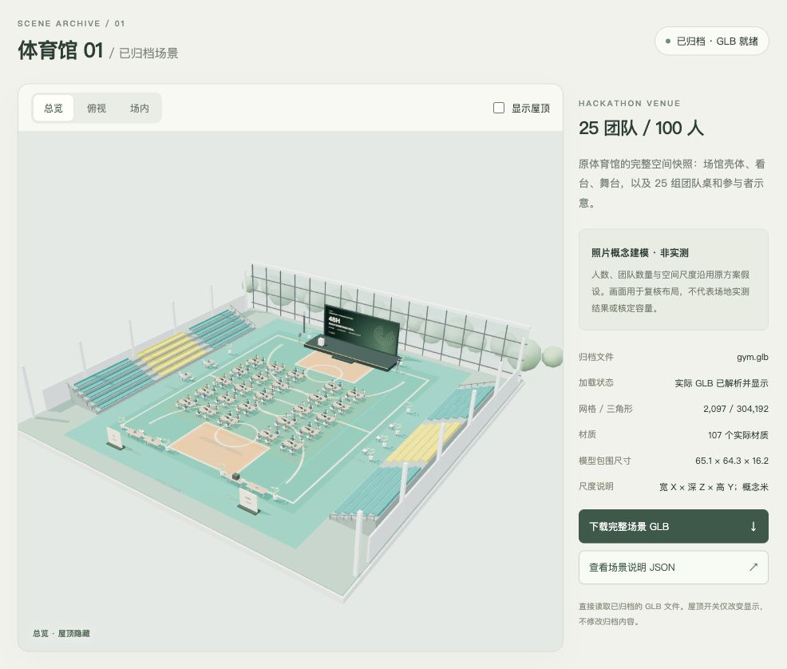
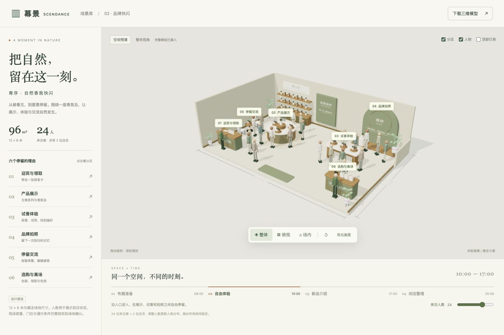
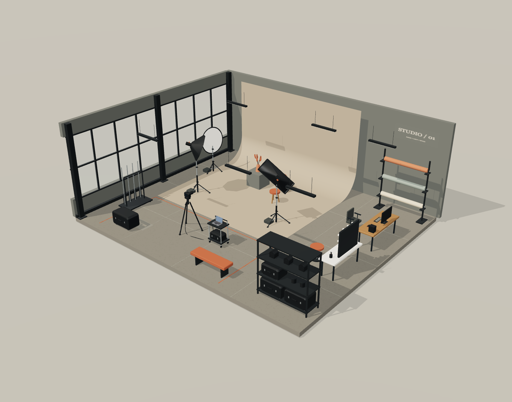
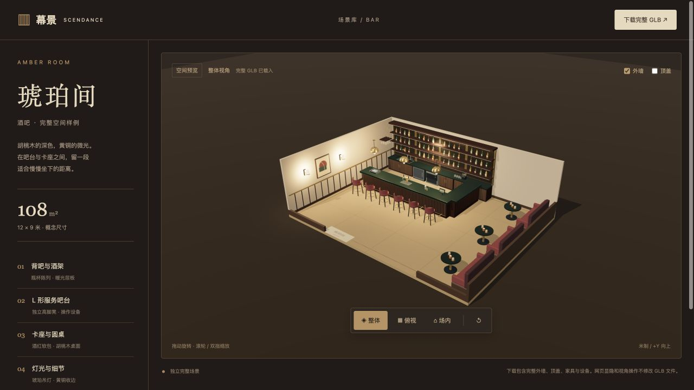
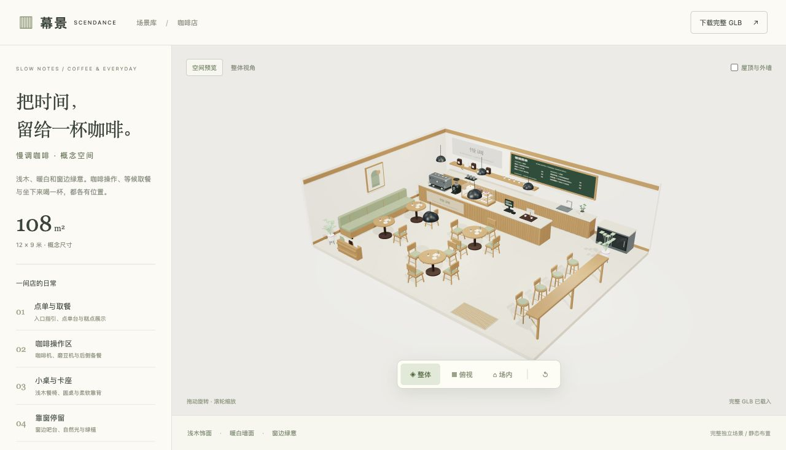
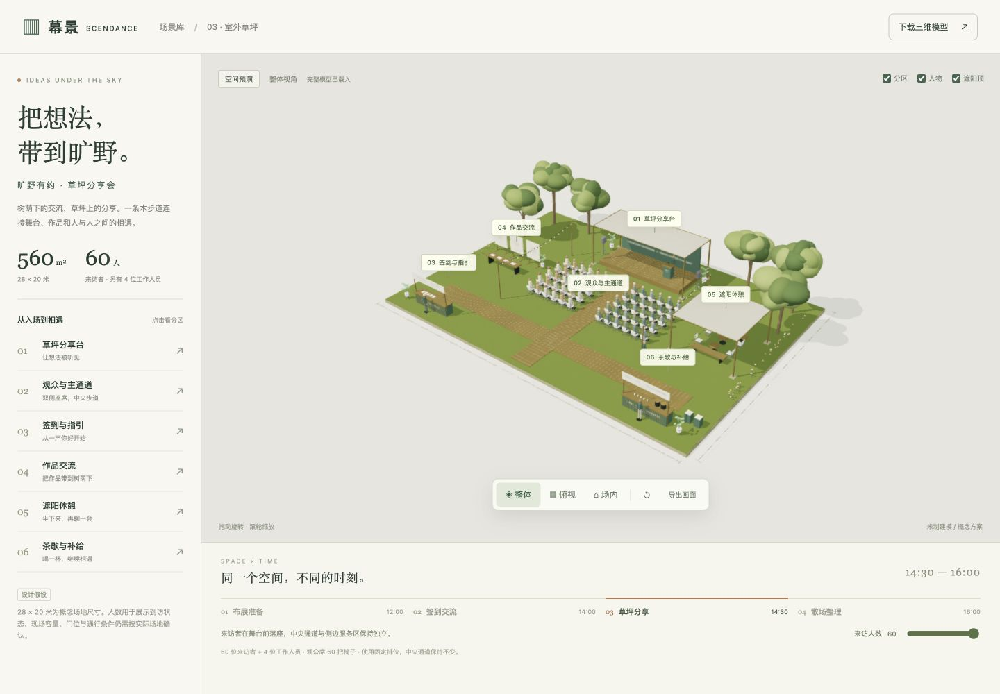
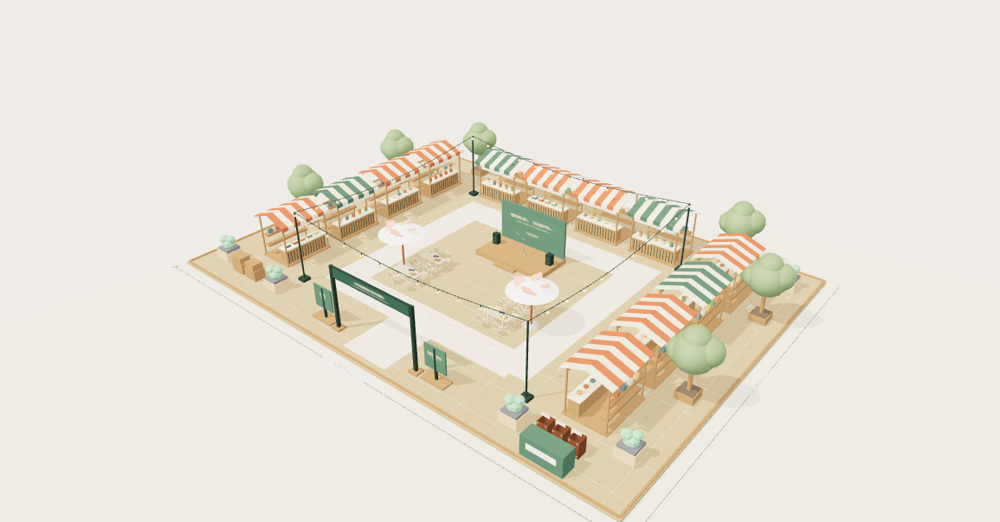
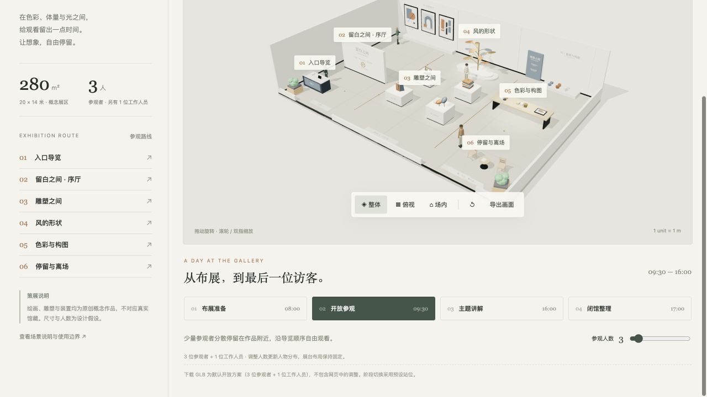
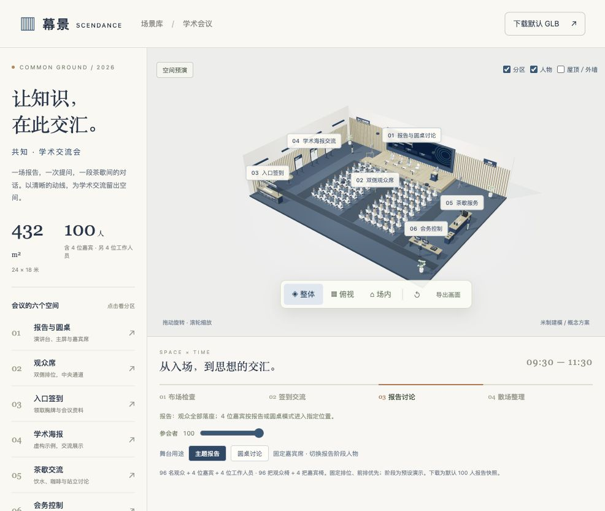
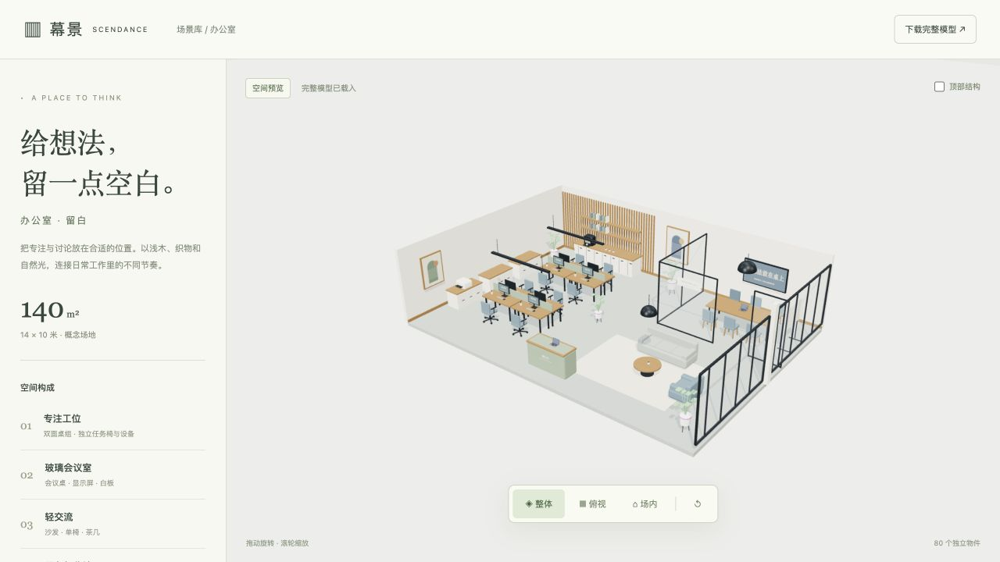

一个空间，一种可能。
完整场景模板。旋转查看、比较布局，再把合适的方案带走。

01 / 体育馆 · 黑客松
100 位参与者 · 25 支团队 · 完整 GLB 归档

02 / 品牌快闪 · 青序
12 × 8 米 · 24 位来访者 · 四个活动阶段

03 / 摄影工作室 · STUDIO / 01
12 × 10 米 · 无影墙与摄影设备 · 完整 GLB 与 ZIP

04 / 酒吧 · 琥珀间
12 × 9 米 · L 形吧台与卡座 · 完整 GLB 与 ZIP

05 / 咖啡店 · 慢调
12 × 9 米 · 咖啡操作与小桌卡座 · 完整 GLB 与 ZIP

06 / 室外草坪 · 旷野有约
完整 GLB、独立预览与 ZIP 归档

07 / 户外市集 · 风物市集
完整 GLB、独立预览与 ZIP 归档

08 / 美术馆 · 留白之间
完整 GLB、独立预览与 ZIP 归档

09 / 学术会议 · 共知
完整 GLB、独立预览与 ZIP 归档

10 / 办公室 · 留白
完整 GLB、独立预览与 ZIP 归档
共十个独立场景。尺寸与使用范围以各模板说明为准。